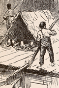

| TIME: | Morning. (Lights: ambers) |
| SCENE: | Same as prologue with such changes as a lapse of 22 years will suggest. The changes are of an improved kind. Trees much larger, vines etc. |
| DISCOVERED: | Deacon Jasper up at gate. Hannah seated at bench L. with pan of vegetables which she is preparing. |
Enter R.U.E. Judge Driscoll, now about 60 years I tell you, York Driscoll, it's the only way. Dawson's Landing had a similar experience you may remember some years ago, and the remedy applied then was effectual. It must be tried again. It seems mighty hard to make the innocent suffer for the guilty. There's not a servant of mine but I believe to be perfectly honest. (At R. of table) You are all here? All 'cept Chambers, Marse Howard. No – no – you needn't include him, I won't have him suspected. (Jasper bows and retires a little L.) I reckon you understand we are searching for a thief, who for a long time has been most persistently robbing the houses of our citizens. Now we know the culprit is right here in our midst. (Preparing note book) (Turning to Jasper) Now Deacon Jasper, we hear from you first. I don't know nothin'. Ha! Ha! We are coming at it. (Judge and Howard rise and show astonishment. Chambers' mother. Did Chambers tell you she was here? No, never. She hyar how? Marse how? Sure enough some at the meeting said it was a woman. (Going up R.3.E. Exits R.U.) (Exit Jasper and Eph R.U.E.) (Driscoll going L. to women and men) You can return to your duties. (Down stage) (Exit Hannah and slaves L.2.E.) Now this looks like business. And York you must allow no sentiment for that boy Chambers to interfere with your duty as a citizen. (Enter Wilson R.U.E. Comes down C.) What's the matter with Wilson? That's so, I never thought of him. Say Pudd'nhead, did you say you knew Roxy was back here at the landing? No, I didn't say so, but I did know it though. Well now, why in thunder didn't you mention it at the meeting? Because I wasn't asked. Do I understand you to say, that you believe Roxy is the thief you're after? I am afraid circumstances justify it, yes. Now, was there ever such a – a – I don't know what to call you Pudd'nhead. By the eternal, York, if I don't believe Pudd'nhead is smelling out a case. Do you propose to defend her, Dave? No, 'taint that Pembroke. I am not even vouching for Roxy's honesty, that is altogether, not as a general thing. To tell the truth I know her to be rather a light fingered party, at least was some years ago. But I reckon the whole thing's outlawed now. Oh! a trifling matter, when one comes to consider it at this distance. It was just after you gave her her freedom Judge, about fifteen or sixteen years ago now, I reckon wasn't it? She lingered about here for a spell doing odd chores for the boys. I was one of her customers. She did my washing. Best washerwoman I ever had too, by the way, only she was wasteful. I got to notice that my bosoms and dickeys and such became fewer and fewer the longer she had the handling of them, until one day I was compelled to remonstrate. And you were fool enough to believe that? I didn't say better, I said more entertaining Judge. More entertaining then. I reckon it's all a matter of disposition and taste, but for my part I like a lie. That is an unusual lie. One that has a flavor. One of proportion and dignity. Just such a lie as Roxy's. A kind of tell the truth or trump; but get the trick. (Howard laughs) Were you sure they were yours? (Judge and Howard laugh) (Goes up R.C. and looks off R.U.) (Enters Patsy D.L.F.) (Howard goes R. back of table and joins Patsy up L.C.) Tom's coming down on this boat too, Aunt Patsy. Who, Tom? Yes, got a letter from him last night. (Go up C.L.) Hey, what's mighty strange. (Pointing off R. behind house) Now how did that? Right in front of the house too. (Goes off behind house R.U.E.) I reckon, Aunt Patsy, we got the thief this time. And if the property can only be recovered. Dear me, I hope so, hanging will just be too good for them. (Re-enter Driscoll R.U.E.) (Going up to Patsy C) (Enter Chambers R.2.E. He stands on steps) York, I will go in and draw up that paper and get Wilson to sign it. (Exit R.2.E. on steps) (READY BOAT WHISTLE R.) Morning Marse Howard. (NOTE: Chambers speaks always with unconscious wellbred freedom to all. His dialect being the only natural result of contact and surroundings and associations. His manner and mood are happy, and light hearted. Without stiffness or pretext he evinces his race, breed and must appear wholly unconscious of it. It other words he is a white man, but thinks himself a negro. With all his familiarity he is as polite as a prince) Oh Chambers – Tom's coming down on this boat, better go meet him. (Exit R.2.E.) (As if to go up C.) Where's Rowy, Chambers? Don't know, ain't seen her this mornin' yet, sir. She's putting on her things to go to the boat. (Enter Rowy from D.F.L.) She's putting on her hat. (DISTANT BOAT WHISTLE) There's the boat. (Wilson Xes R.) You going to the boat, Miss Rowy? So am I to meet Tom. (Exit running R.U.E.) You come back hyar and start fair. (Exit R.U.E.) Patsy what do you reckon's Tom's reason for fooling the Judge so? How fooling him? (BOAT WHISTLE) (Patsy turns up stage, Wilson stops her) (Points off R.U.E. to window at back of house) You mean Tom's room? Yes. See that broken limb just underneath the window? The one in the room? Yes. I don't know, I couldn't see her face. Did you see the other's? As plain as I see yours. (Down R.) (BOAT WHISTLES NEARER) Bless me, boat's most here. But what has this got to do with Tom's coming down from St Louis? No, Tom Driscoll's. (WHISTLE OF BOAT INDICATING ARRIVAL) There's the boat in. Say Dave, have you told Judge Driscoll? (Coming down) – you know you owe it as a duty – (ANOTHER WHISTLE )) BELL) Bless me, boat's in. I must take a last look and see that everything's in order. (Exit D.F.L.) Adam was only human after all. He didn't want the apple for the apple's sake, he wanted it because it was forbidden. The mistake was in not forbidding the serpent, then Adam would have eaten the snake. (X C.2.) (Enter Tom followed by Chambers R.U.E. Chambers carries Tom's luggage and comes to front of steps R.2.E.) Chambers. Take those things to my room and see if my uncle is in. (Exit Exit R.2.E.) Howdy Pudd'nhead. How does the law come on? Had a case yet? Not yet Tom. Have a nice trip? (Re-enter Patsy D.F.L. Comes gate C. and stops) Splendid. St Louis is the place for me. (Goes R. then turns) Too tame here. (Sees Patsy up stage) How 'do Aunt Patsy? Saw Rowy at the landing. Tom Driscoll did you come down from St Louis on that boat? Hey? (Slightly starts) 'Course he did. How do you reckon he came? Swim? No, I mean, I'm expecting my new lodgers, didn't know but you might have met them on the boat. (X to Patsy they X up L.C. He talks with Patsy up C.) I wonder why it is that a man who can't tell a lie himself always thinks he's the best judge of one. (Enter Rowy R.U.E.) On! Maw, they're here and oh, they're so nice. Just as pretty as pictures. (Comes down C.R.) Who she speaking of? (Coming down L. Tom Xing back of Rowy to R. then down R.) And uncle Dave, you can't tell one from the other. They're as like as two peas. (Goes L. to Patsy) (Enter Luiji and Angelo twins R.U.E.) Gentlemen, permit me, this is my mother. And this is my uncle Mr. Wilson. (They bow to Aunt Patsy, go to Wilson R.C. and shake hands. Rowy and Patsy go up to the house L.U.E.) Let me introduce you gentlemen, Mr. Thomas Driscoll, a fellow passenger of yours I believe. (Patsy listens up L. of them) Yes, we saw you on the boat sir. (Exit in the house L.) (Exit in the house L.) (Chambers enters R.2.E. from house. Comes down R.) Very well, excuse me gentlemen. Going to settle here? Hardly that. We are travelling at leisure to study the character of your beautiful country, as well as to learn something of the manners of your people. You'll find that extremely interesting gentlemen, especially the people. (On steps) (Exit R.2.E.) (The twins look amazed at Tom's greeting to Wilson) Ah! Miss Rowy in the house, sir? Yes. (Xes to R.) (Going up the twins lift their hats to him. He politely returns it and exits D.F.L.) You did not present us to that young gentleman did you? No, an oversight, I hope you will excuse. I reckon you would hardly care to know that young man in a social way. You mean – (Pointing to where Chambers went) Explain. He is a slave. And is the other young man? (Points to R.2.E.) (Enter Patsy D.F.L. with Rowy L and Chambers.* Chambers R of door and Rowy remain at the door like two children watching the twins) Gentlemen, your rooms are quite ready. Pardon Madam. This way gentlemen. (Luiji and Angelo go up to door passing Patsy. Wilson follows twins. Patsy courtesies* as they exit D.L.F. Rowy and Chambers follow them expressing wonder. Patsy at foot of steps catches Wilson's coat as he is about to enter the house) In what Patsy? (Exit in house followed by Patsy) (Enter Tom and Howard R.2.E.) as he enters) Great Caesar, you don't mean to say that's the law? (Turns in surprise to Howard who is on the steps H.2.R.) She isn't so very old. Fetch 800 at least. (Xes to L.) Run along now Tom, Judge and I have got to look over some papers. (Exit R.2.E.) She's got to get away from here. Damn her! I would like to get even with her for the way she clawed my neck. It's sore yet where her nails sunk. She never recognized me in that wench disguise though, that's sure. I don't fear her so much as I do that planter John Moorehead. He'll be here in a few days to demand the money I owe him. If I can't find some way to raise it or stand him off, he'll expose me to my uncle – Then away goes the will again. I don't dare go to the old mill where I have concealed the stuff, not while Roxy's there. Oh! if this would only frighten her away. What a fool I was, what a fool. I should have taken it to St Louis and disposed of it, as I have before. (Rise) By thunder! If they don't sell her why couldn't I? I might. Once down the river she'd never find her way back here again. Hmm, do to think about anyway. (Go up R. C. Way up stage. Hears Howard and Driscoll speaking in the house and exits R.U.E.) (Enter Howard and Driscoll R.2.E.) I reckon there's where you're sensible York. Tom's only been what any young fellow might be. He'll pull up and be an honor to you yet. I hope you're right, but I confess he discourages me at times. I can see in him nothing of his father, nothing of his mother, not a trace of either, and I've watched closely too. A trifling thing to mention, but did you notice the heartless way he just now spoke of Roxy? And she his nurse and fond of him. A mighty sight fonder of him than of her own boy. I didn't like it. (Enter Rowy and Chambers D.F.L.) Oh! Judge Mr. Pembroke! Have you seen them? They are here. They have come. Who? (Xes to R.C. X to Rowy) Hey, whose be they, where are they at? (Turns to Driscoll) Ha, ha, ha. (Smothers laugh and Rowy stops him) (Chambers smothers laughter. Rowy tries to stop him) I will stand God-father to one – and you my dear friend will do honor to this – what are they, boys? (Chambers smothers laugh) Boys? Oh. Dear no. Girls, York, girls. (Chambers and Rowy smother laugh and go up C.) So much the better. Howard Pembroke we will make Rome howl. (They frisk about like two boys) him to door) Go tell them to come. Tell Maw too, and uncle Dave. (Chambers exits holding his sides D.L.F.) But you haven't told us where they are. Oh they are here. (Rowy up laughing) Now York Driscoll, you must be careful, you've had no experience. You must not try to hold both at once. Oh what fun. (Aloud. Come down between them) No you shall hold one and Judge shall hold the other. (Enter Patsy D.F.L. Speaks at door) (At sound of Patsy's voice all separate. Rowy goes R.) I reckon it's caused by an event. We've just been apprized of – The recent arrivals, Aunt Patsy. You mean the twins? (Rowy laughs) (Howard and Driscoll come to C. look at each other.) (Enter Chambers comes down to Rowy of gate up C.) (Turns and sees twins and looks amazed) Chambers, who are these strangers? Why, deys de twins, Marse Judge. Ha, ha, ha. Which one would you like to hold first, Judge? (Rowy and Chambers both laugh and go up R. again) Howard Pembroke. York Driscoll. (Goes up to Patsy who presents him to twins up C.) (L.C.) (Rowy advances R. of him laughing.) Now I beg you will refrain from mentioning this very ridiculous error – I shall esteem it a personal favor to be paid by any reward you may make upon me in the future. (Chambers follows to C.) Do you really mean it this time? (Throws some flowers at him. Chambers runs up R. laughing) (Giving papers to her.) (READY MURMURS R.) Oh you dear Judge. (Rowy goes L. clapping her hands in delight. Driscoll goes up and is presented to the twins by Patsy) Oh Chambers, Chambers – (Enter Tom R.U.E. gate. Tom has same paper. As Chambers Xes from R.U. to meet Rowy who is down R., Tom intercepts them C. Chambers stops) (Rowy makes signs to be silent as he goes L. to her.) She's that white nigger's mother too. (Looks up stage L.) Oh quite a gathering. (Howard comes to meet Tom R.C.) I've got the names. (Howard takes paper from Tom) (Enter Wilson D.F.L.) (MURMURS START OFF R.U.E.) You're making good use of your time gentlemen. If you keep on at this rate you'll soon know the town. (Comes down C.) Dave, we want your signature to this. (MUSIC NO. 8 until Curtain) What is it? (MURMURS GROW LOUDER) (Wilson takes paper and goes L. up. Murmur of voices is heard outside R.U.E. All turn to see what it means as Roxy darts on R.U.E. Stands in gate C. She looks on scene and then addresses herself to Jasper and others who have followed a little behind her. Slaves appear at door L.2.E.) What you want with me? (Then to those in front) Ise a freed nigger I is. (To those at back) What you want with me anyway? Yes, and she's the thief you're after. What? (Everybody moves with her) You say dat of me? Lor o' mighty. He say dat of me. Where did you come from? Whar are you doing here? of prologue) Don't you know me? Ise Roxy. I is. Don't you know me? I'se Chambers' mother. (Runs to her down L.C.) her left hand to keep Chambers away. She does not take her eyes off Tom who is R.) You hold hands off me. You – you – till I know what I 'cused of. (Chambers backs to Rowy L.) (Looks threateningly at Tom. Jasper Xes to L. of Roxy) (Slaves move forward a little L.) (WARN CURTAIN) All you have said is true, but you must explain why you have concealed yourself. And unless you can give a satisfactory account of yourself, you will be seized and sold down the river. (Slaves express horror) Clear yourself of this charge, if you can. I ain't gwine to say nothing – no more – not – now! Not now! I don't keeyr you kin sell me down the river – I say nuffin. Not yit – not yit – (Looks threateningly at Tom and insinuates more than she says) Wilson, have you read that paper? Yes. (Everybody astonished) (Coming R.C. a step. Roxy [goes?] back R.) Just as plainly as I see you, Tom Driscoll. By Gor! |
